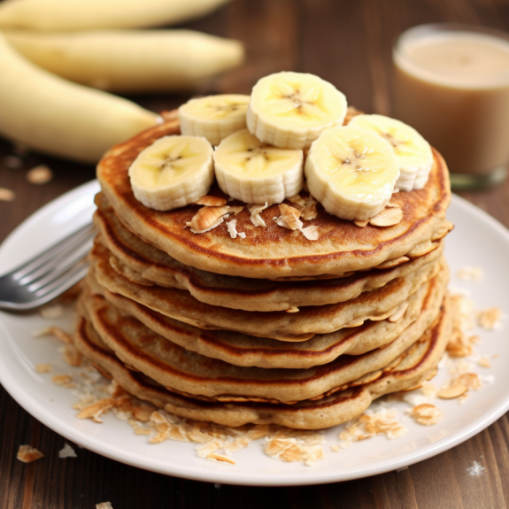
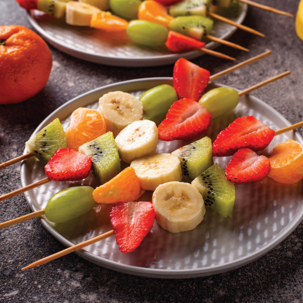
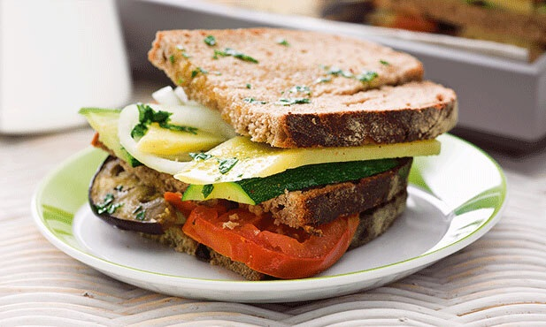
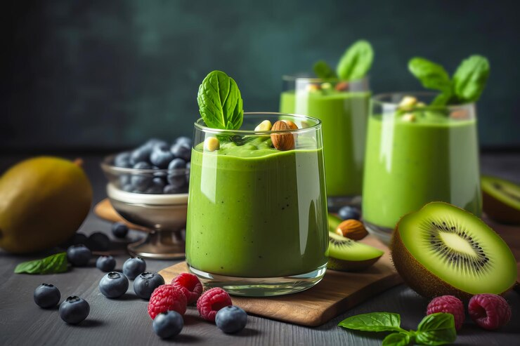
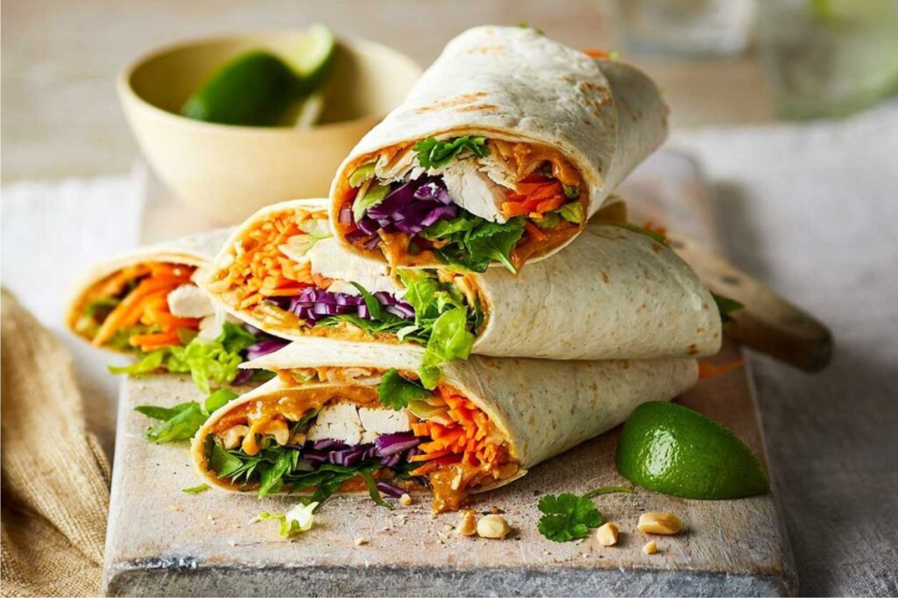

Panquecas de Banana e Aveia:
Benefícios para a saúde: Esta receita é uma maneira deliciosa de incluir frutas e grãos integrais na dieta das crianças. As bananas são ricas em potássio, fibras e vitaminas, enquanto a aveia fornece fibras, proteínas e nutrientes essenciais. Essas panquecas são uma excelente fonte de energia de liberação lenta, que sustenta as crianças durante o dia.
Espetinhos de Frutas:
Benefícios para a saúde: Os espetinhos de frutas são uma maneira divertida e colorida de incentivar as crianças a comerem frutas variadas. Frutas como morangos, uvas, melancia, melão e abacaxi são ricas em vitaminas, minerais e antioxidantes que promovem o crescimento saudável, fortalecem o sistema imunológico e contribuem para a saúde cardiovascular.
Sanduíches de Vegetais e Queijo Integral:
Benefícios para a saúde: Este sanduíche é uma opção nutritiva que fornece uma variedade de vegetais coloridos, como tomate, alface, cenoura e pepino, que são ricos em fibras, vitaminas e antioxidantes. O queijo integral oferece proteínas e cálcio essenciais para o crescimento e desenvolvimento dos ossos das crianças, enquanto o pão integral fornece fibras e carboidratos complexos que fornecem energia sustentada.
Smoothie de Frutas e Espinafre:
Benefícios para a saúde: Os smoothies são uma maneira conveniente de incorporar uma variedade de frutas e vegetais na dieta das crianças. Este smoothie em particular inclui frutas como banana, morango e manga, juntamente com uma porção de espinafre, que é uma excelente fonte de ferro, cálcio, fibras e vitaminas. Os smoothies são uma ótima maneira de manter as crianças hidratadas e nutridas, especialmente nos dias quentes.
Wrap de Frango e Vegetais:
Benefícios para a saúde: Wraps são uma opção versátil e portátil para refeições infantis. Este wrap de frango e vegetais oferece proteínas magras e vegetais coloridos, como alface, tomate, cenoura e pimentão, que são ricos em fibras, vitaminas e antioxidantes. É uma refeição equilibrada que fornece energia sustentada e suporta o crescimento saudável das crianças.
